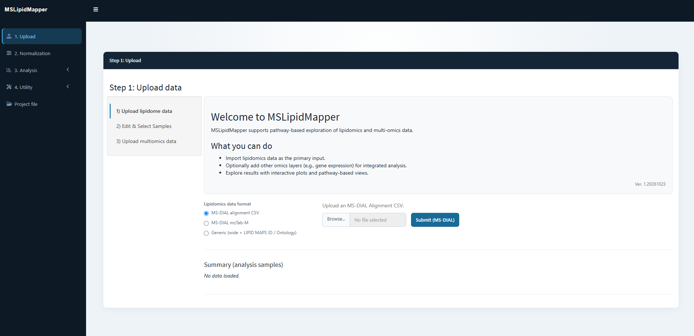
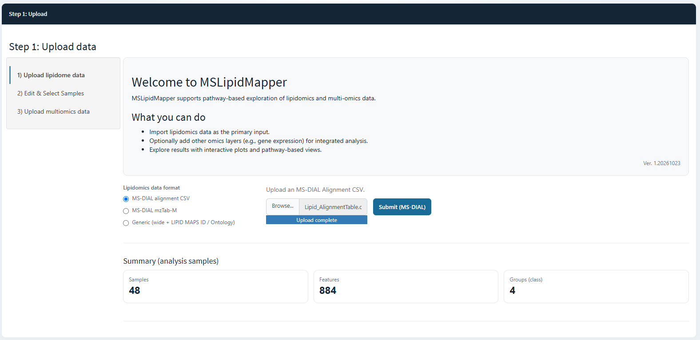
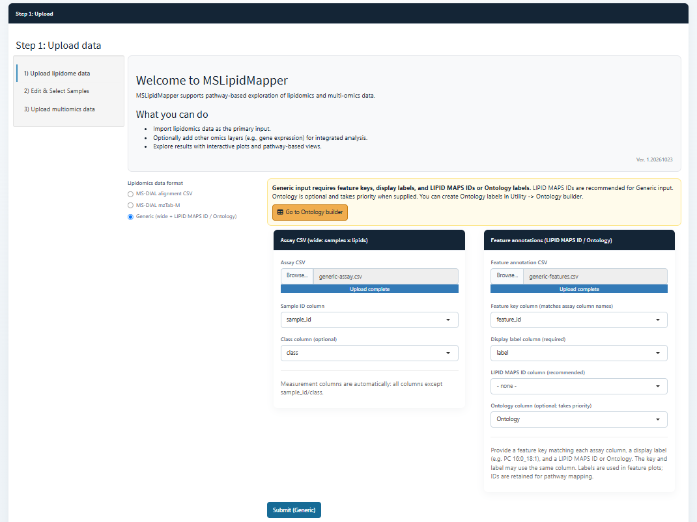
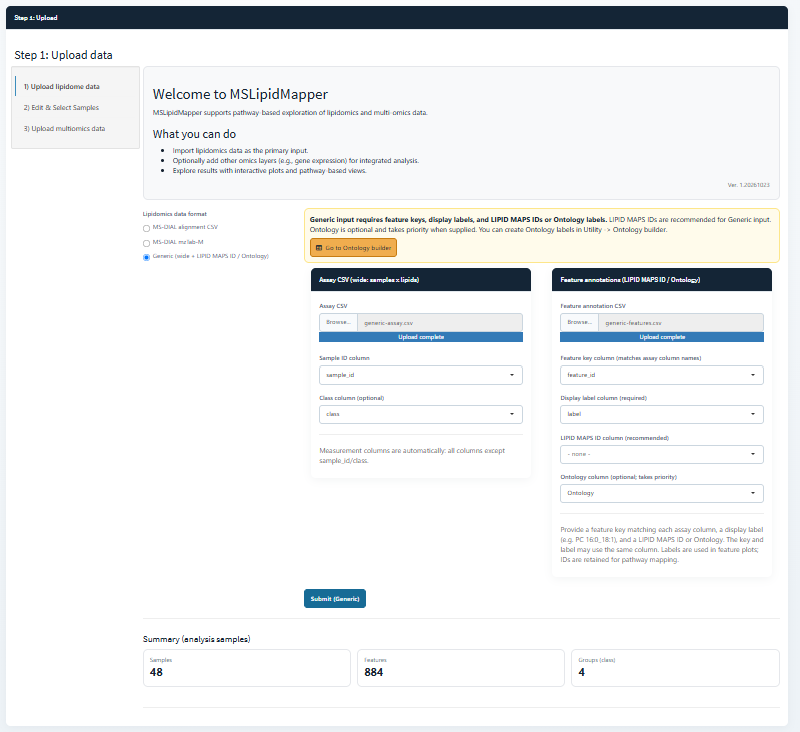
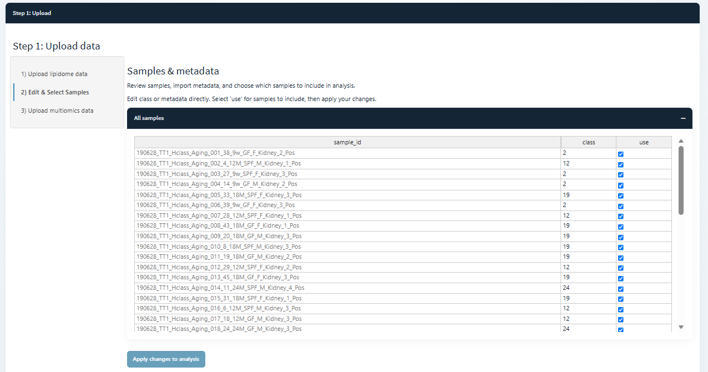
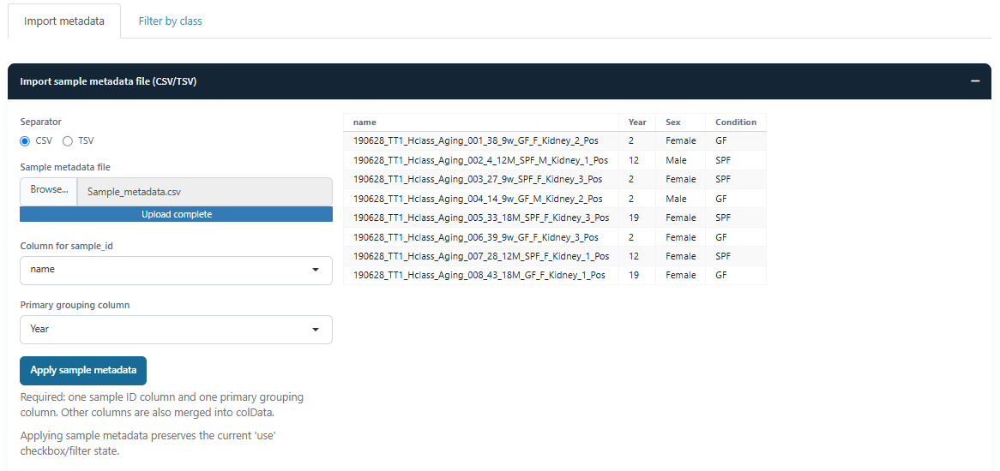
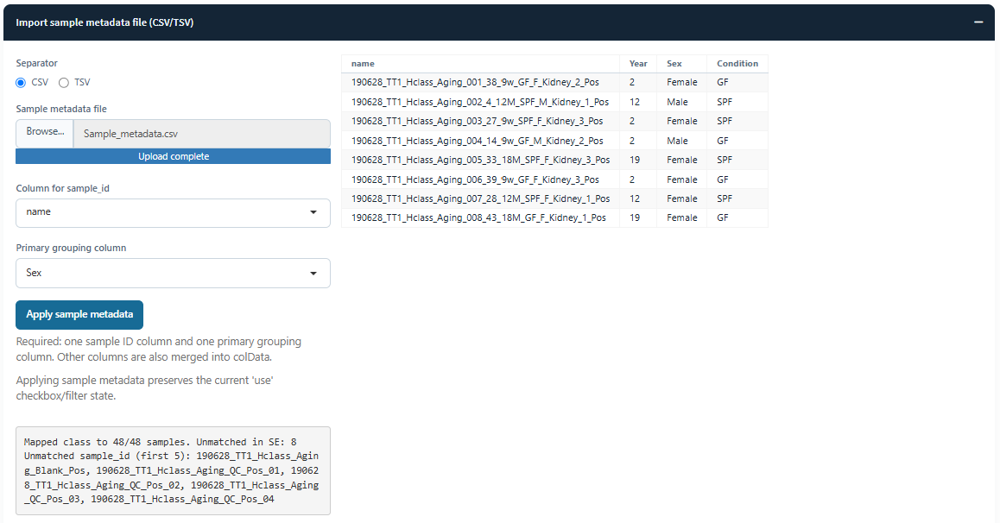
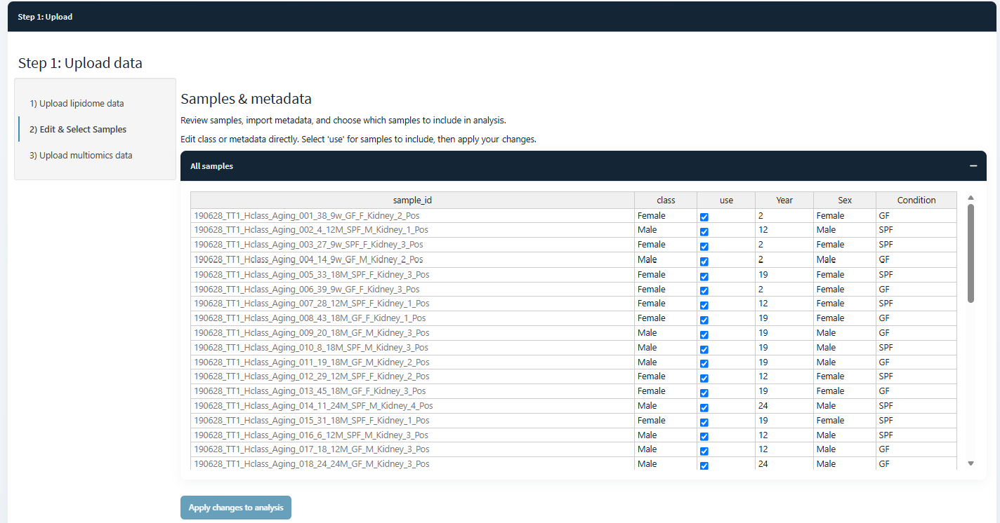

Import data
Import an MS-DIAL alignment CSV, an MS-DIAL mzTab-M file, or generic abundance and annotation CSV files.
Choose an input format
Open 1. Upload from the sidebar. Under Lipidomics data format, choose the format matching your files.
| Format | Files to prepare |
|---|---|
| MS-DIAL alignment CSV | An Alignment Table CSV exported by MS-DIAL, with its original headers and annotation columns. |
| MS-DIAL mzTab-M | An mzTab-M file exported by MS-DIAL (.mztab or .mzTab). |
| Generic (wide + LIPID MAPS ID / Ontology) | An abundance CSV with samples in rows and lipids in columns, plus a feature annotation CSV. |


Import MS-DIAL data
Choose either MS-DIAL input format, then use the same upload workflow.
| Input format | File | Submit button |
|---|---|---|
| MS-DIAL alignment CSV | Alignment Table CSV with the original multi-row header and annotation columns | Submit (MS-DIAL) |
| MS-DIAL mzTab-M | MS-DIAL mzTab-M export (.mztab or .mzTab) | Submit (mzTab-M) |
For a first walkthrough, download the bundled Lipid_AlignmentTable.csv using GitHub's Raw or Download control.
- Under Lipidomics data format, select MS-DIAL alignment CSV or MS-DIAL mzTab-M to match your file.
- Click Browse... and select the file.
- Click Submit (MS-DIAL) for an alignment CSV, or Submit (mzTab-M) for an mzTab-M file.
- Check the imported data under Summary (analysis samples).
The screenshot below illustrates the shared workflow using the example alignment CSV.


Generic CSV files
Download the demo files
These files were converted from the bundled MS-DIAL alignment CSV. They contain 48 analysis samples, 884 lipid features, and four age groups (2, 12, 19, and 24 months). Blank and quality-control samples are excluded. Abundance values and Ontology annotations are preserved from the source table. Molecular display labels use the annotation after the separator when present.
Upload both files. Select sample_id as the sample ID column, class as the class column, feature_id as the feature key, label as the display label, and Ontology as the Ontology column. Leave the LIPID MAPS ID column set to - none -, then click Submit (Generic). The summary should show 48 samples, 884 features, and 4 groups.
Prepare the abundance table
Create a CSV with one row per sample and one column per lipid. Include a sample identifier column and, optionally, a sample group column.
sample_id,class,lipid_001,lipid_002
Sample_1,Control,1200,820
Sample_2,Treatment,950,1100The example illustrates the input layout. After you select the sample ID and optional class columns, the remaining columns are treated as lipid abundance measurements and should contain numeric values.
Prepare the feature annotation table
Provide one unique feature key matching each lipid column in the abundance table, a non-empty display label, and a LIPID MAPS ID or Ontology value. LIPID MAPS IDs are recommended. If both an ID and an Ontology value are supplied, Ontology takes priority for pathway class mapping.
The following example uses Ontology values for two lipid classes.
feature_id,label,Ontology
lipid_001,PC 16:0_18:1,PC
lipid_002,PE 18:0_20:4,PEFor ID-based input, add a LIPIDMAPS_ID column containing the actual identifiers for your annotated lipids. Display labels are used in plots. Feature keys link annotation rows to abundance columns.
Upload and assign columns
- Select Generic (wide + LIPID MAPS ID / Ontology).
- Upload your abundance file under Assay CSV.
- Set Sample ID column to
sample_idand Class column (optional) toclassfor the example above. Choose - none - if there is no group column. - Upload your annotation file under Feature annotation CSV.
- Set Feature key column (matches assay column names) to
feature_idand Display label column (required) tolabel. The same column can serve both roles if it contains suitable keys and labels. - For the Ontology example above, select
Ontologyunder Ontology column (optional; takes priority). For ID-based input, select your ID column under LIPID MAPS ID column (recommended). - Click Submit (Generic) and check Summary (analysis samples).




Review samples and groups
After importing data with any of the three formats, open 2) Edit & Select Samples.
- Review the sample identifiers and
classvalues in All samples. - Edit sample groups or metadata as needed.
- Use the
usecolumn to select the samples to include in analysis. - If you edited the table, click Apply changes to analysis.


To add sample information from a file, follow Import sample metadata below. Once the sample information is correct, continue to Normalization.
Import sample metadata
Use a sample metadata file to add information such as age, sex, or experimental condition and choose the primary grouping variable. This step is available after importing lipidomics data with any supported format.
Prepare the metadata file
Prepare a CSV or TSV with a header row, one sample ID column, and a primary grouping column. Sample IDs must match the identifiers in the imported lipidomics data. Use one row per sample. Additional columns are imported as sample metadata.
The screenshot below uses a file named Sample_metadata.csv with the columns name, Year, Sex, and Condition. Here, name contains the sample identifiers and Year is selected as the primary grouping variable.
Upload and apply metadata
- Open 2) Edit & Select Samples and scroll to the Import metadata tab below the sample table.
- Under Separator, choose CSV or TSV to match your file.
- Under Sample metadata file, click Browse... and select the file. Review the table preview.
- Set Column for sample_id to the column containing matching sample identifiers, such as
name. - Set Primary grouping column to the variable to use for sample groups, such as
Year. - Click Apply sample metadata.
- Read the import status message, then check the All samples table for the updated
classvalues and additional metadata columns. Check any reported unmatched sample IDs against your file.
The selected primary grouping column sets class. Additional metadata columns are merged by sample ID. Applying metadata preserves the current use selections.


Check the import result
In the example below, Sex is selected as the primary grouping column. After clicking Apply sample metadata, the status reports Mapped class to 48/48 samples. The sample groups are now based on sex. To group by age instead, select Year and apply the metadata again.
The status also reports Unmatched in SE: 8. These are metadata rows whose sample IDs are absent from the imported dataset. The Generic demo contains only the 48 analysis samples, so metadata rows for the blank and seven QC samples have no match. Review unmatched IDs against your input files when using your own data.


Return to All samples to verify the applied metadata. In this example, class contains Female and Male, while Year, Sex, and Condition appear as additional columns. The use selections remain checked. The Apply sample metadata action has already applied these values. Use Apply changes to analysis if you subsequently edit the table.

